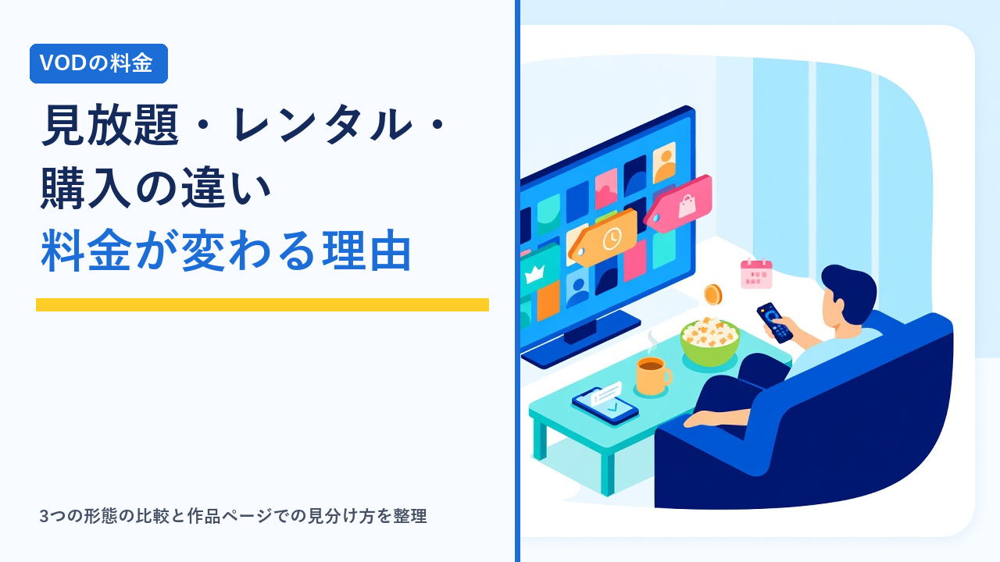

VODの「見放題」と「レンタル」「購入」の違い：同じ作品でも料金が変わる理由と確認方法
更新日：2026-10-10

動画配信サービス（VOD）を使っていると、「月額料金を払っているのに、見たい作品を再生しようとしたら別料金だった」という場面に出会うことがあります。これは、VODで配信される作品が「見放題」「レンタル」「購入」という異なる提供形態で並んでいるためです。同じサービスの中に3つの形態が混在していることも多く、さらに同じ作品でもサービスや時期によって扱いが変わります。この記事では、3つの形態の違いと料金の仕組み、同じ作品でも料金が変わる理由、そして作品ページでどう見分ければよいかを客観的に整理します。特定サービスの料金や配信作品を保証するものではなく、確認の仕方と考え方を扱います。
まず押さえたい3つの提供形態
VODの作品は、料金の払い方と見られる期間の組み合わせで大きく3つに分かれます。業界用語では、見放題を「SVOD（定額制）」、レンタルを「TVOD（都度課金）」、購入を「EST（買い切り）」と呼ぶこともあります。
- 見放題：月額（または年額）の定額料金を払うと、対象作品を期間中いくらでも見られる形態。追加料金はかかりませんが、対象作品は入れ替わり、解約すると見られなくなります。
- レンタル：作品ごとに料金を払い、決められた期間だけ見られる形態。一般に「決済から30日以内に再生を始め、再生開始から48時間以内に見終える」のように、視聴開始までの期限と再生後の期限の2段階で決まっています。期限はサービスや作品によって異なります。
- 購入：作品ごとに料金を払い、期限なしで繰り返し見られる形態。レンタルより高めの価格に設定されることが多く、「購入（買い切り）」「デジタル購入」などと表記されます。
見放題中心のサービスでも新作映画はレンタル扱いというように、1つのサービスの中に複数の形態が混在することは珍しくありません。レンタルや購入が中心で、見放題の対象が少ないサービスもあります。
3つの形態の比較表
| 比較項目 | 見放題 | レンタル | 購入 |
|---|---|---|---|
| 料金の払い方 | 月額・年額の定額 | 作品ごとに都度払い | 作品ごとに都度払い（レンタルより高め） |
| 見られる期間 | 契約している間 | 決済後の期限内（例：30日以内に再生開始、再生から48時間など） | 期限なし（サービスの提供が続く限り） |
| 対象作品の傾向 | 旧作・準新作・オリジナル作品が中心 | 新作・話題作が中心 | 新作から旧作まで幅広い |
| 作品の入れ替わり | 配信終了で見られなくなることがある | 期限内は影響なし | 原則見られるが、配信終了時の扱いは規約による |
| 解約後の扱い | 見られなくなる | 期限内なら見られるサービスが多い | アカウントが残っていれば見られるサービスが多い |
| 無料体験中の扱い | 対象作品は無料で見られることが多い | 別料金がかかる | 別料金がかかる |
| 向いている見方 | たくさんの作品を幅広く見る | 新作を公開後早めに1本だけ見る | 何度も繰り返し見たい作品がある |
上の表は一般的な傾向を整理したものです。視聴期限・解約後の扱い・無料体験中の条件はサービスごとに異なります。契約前に各公式サイトのヘルプページで最新の条件をご確認ください。
同じ作品でも料金が変わる理由
「別のサービスでは見放題だったのに、こちらではレンタル」「先月は有料だったのに今月は見放題になっている」という違いは、次のような理由で起こります。
① 配信権の種類と時期が違う
作品を配信する権利は、配給元とVOD事業者の契約で決まります。多くの映画は、劇場公開のあと「レンタル・購入での配信」が先に始まり、一定期間を経てから「見放題での配信」に移る流れをとります。この順番や期間は作品ごとに違うため、同じ作品でも、時期によってレンタル扱いか見放題かが変わります。見放題の権利は期間限定で結ばれることが多く、期間が終わると見放題から外れてレンタルに戻ることもあります。
② 「新作」「準新作」「旧作」の区分で価格が変わる
レンタルや購入の価格は、配信開始からの経過期間に応じて「新作」「準新作」「旧作」のような区分で設定されることが一般的です。新作は高め、時間がたつと段階的に下がる傾向があります。区分の名前や価格帯はサービスによって異なります。
③ 画質（HD／4K）によって価格が分かれる
同じ作品でも、標準画質（SD）、高画質（HD）、4K（UHD）の順に価格が高くなる設定を採るサービスがあります。再生する端末が高い画質に対応していなければ、上位の画質を選んでも差が出ないため、手持ちの端末の対応状況を確認してから選ぶのが無駄がありません。画質や端末の対応についてはVODサービスの画質・ダウンロード機能を比較で整理しています。
④ 字幕版と吹替版で扱いが違う
字幕版と吹替版が別々の作品として登録されているサービスでは、片方だけが見放題でもう片方はレンタル、という扱いの違いが起こることがあります。見たい版が見放題の対象かは、作品ページで版ごとに確認が必要です。字幕・吹き替えの提供方式はVODの字幕・吹き替え・音声設定の違いまとめで詳しく扱っています。
⑤ サービスごとに契約内容が異なる
配給元との契約はサービスごとに別々に結ばれるため、ある作品がAでは見放題、Bではレンタル、Cでは配信なし、ということは日常的に起こります。「どのサービスでも同じ条件」ではないため、見たい作品がある場合はサービスをまたいで確認する必要があります。
⑥ セールやポイント還元で実質価格が変わる
レンタル・購入の価格は一時的なセールで下がることがあり、また月額料金の一部がポイントで還元され、レンタル料金に充てられる仕組みを持つサービスもあります。ポイントの仕組みと実質負担の考え方は映画好き向けVODの選び方：新作レンタルと見放題の違い・ポイント付与の仕組み比較をご覧ください。
見放題かレンタルかを見分ける方法
別料金の作品を誤って決済しないためには、作品ページの表記を再生前に確認する習慣が役立ちます。確認する場所は主に次の通りです。
- 作品ページの料金表記：見放題対象の作品には「見放題」「プレミアム」「無料」などのラベルが付き、レンタル・購入の作品には金額や「レンタル」「購入」のボタンが表示されるのが一般的です。金額が書かれたボタンが出てきたら、見放題の対象外と判断できます。
- サムネイルのアイコン・マーク：一覧画面でサムネイルの角に「￥」マークや王冠マークなどが付き、料金が必要な作品を区別できるサービスがあります。マークの意味はヘルプページに説明があります。
- 検索の絞り込み機能：「見放題のみ表示」のような絞り込みがあるサービスでは、最初から有料作品を除いて探せます。
- 決済前の確認画面：レンタル・購入では、金額・視聴期限・画質を表示する確認画面が決済の直前に出ます。ここで初めて期限や画質を知ることも多いため、内容を読んでから進めます。
- 公式サイトの作品検索：多くのサービスは、ログインなしで作品を検索して料金形態を確認できます。契約前に見たい作品の扱いを調べられます。
知っておきたい注意点
- 無料体験中でもレンタル・購入は別料金：無料体験は見放題の部分が無料になる仕組みです。体験期間中にレンタルや購入をすれば、その料金は請求されます。体験の条件は動画配信サービスの無料体験まとめ比較にまとめています。
- 見放題の対象は入れ替わる：「あとで見よう」と思っていた作品が見放題から外れることがあります。配信終了予定は作品ページに表示されるサービスが多いので、気になる作品は終了日を確認しておきます。
- 購入作品も「永久に見られる」とは限らない：購入はサービスが提供を続ける限り見られる形態で、配信権の終了やサービス終了時の扱いは利用規約で定められています。終了時にダウンロードの猶予期間や返金・ポイントでの補償を案内する例もありますが、条件はサービスによって異なります。
- 決済方法によって使える機能が違う：アプリ内決済と公式サイト決済で価格が異なる、またはアプリ内ではレンタル・購入ができないといったケースがあります。支払い方法の違いはVODの月額料金を年間で比べるで整理しています。
- 家族が使う端末では購入制限を設定する：子どもが操作する端末では、決済に暗証番号（PIN）を求める設定にしておくと、意図しないレンタル・購入を防げます。設定の種類は子ども向け作品に強いVODとペアレンタルコントロール機能の比較をご覧ください。
- レンタルの期限は2段階：「決済から〇日以内に再生開始」と「再生開始から〇時間以内」の両方があり、再生を始めると後者の短い期限に切り替わります。途中まで見て数日空けると期限切れになることがあるため、見終える時間を確保してから再生を始めるのが無難です。
契約前に確認する手順
- 見たい作品を書き出す：新作中心か、旧作やシリーズものを幅広く見たいかで、向いている形態が変わります。
- 公式サイトの作品検索で扱いを調べる：見たい作品が見放題かレンタルか、複数のサービスで比べます。字幕版・吹替版・画質ごとに扱いが違わないかも見ます。
- 月額料金と都度料金の合計で考える：見放題の月額に、レンタルしそうな本数分の料金を足したものが実際の負担になります。レンタル中心なら見放題に加入しないほうが安くなる場合もあります。
- ヘルプページで視聴期限と解約後の扱いを確認する：レンタルの期限、購入作品の解約後の扱い、配信終了時の対応を「レンタル」「購入」「視聴期限」などの語で調べます。
- 無料体験があれば見放題の範囲を確かめる：体験中に見たい作品のラベルを実際に見て、有料作品の表示のされ方に慣れておくと、本契約後の誤決済を防げます。体験のみで終える場合の注意点はVODサービスの解約忘れを防ぐコツと注意点まとめにまとめています。
選び方のポイント
- たくさん見るなら見放題、年に数本なら都度払い：月に見る本数が多いほど見放題の割安感が出ます。見る本数が少なければ、見放題に入らずレンタル・購入だけで済ませる選択も合理的です。
- 新作重視なら「レンタルの品揃え」と「ポイント還元」を見る：新作は多くのサービスでレンタル扱いになるため、見放題の作品数だけで比べると判断を誤ります。
- 繰り返し見る作品だけ購入を検討する：購入はレンタルの数倍の価格になることが多いため、何度も見る作品に限って選ぶと無駄が出にくくなります。
- 作品ページのラベルを見る習慣をつける：見放題と有料作品が同じ画面に並ぶサービスでは、再生前に金額表示の有無を確かめることが最も確実な対策です。
- 家族で使うなら決済の制限をかける：暗証番号による購入制限を設定しておくと、意図しない課金を防げます。
よくある質問
見放題のサービスに入っているのに、なぜ別料金の作品があるのですか？
見放題の対象になるかどうかは、作品ごとに配給元とVOD事業者が結ぶ契約で決まるためです。新作映画などは先にレンタル・購入で配信され、一定期間を経てから見放題に加わる流れが一般的で、見放題の権利が期間限定のこともあります。そのため、同じサービスの中に見放題の作品と別料金の作品が並びます。作品ページに金額の付いたボタンが表示されていれば、見放題の対象外と判断できます。
レンタルした作品は、いつまで見られますか？
多くのサービスで「決済から一定期間内に再生を開始する」と「再生を始めてから一定時間内に見終える」という2段階の期限が設けられています。例として、30日以内に再生を開始し、再生開始から48時間以内といった形ですが、日数や時間はサービス・作品によって異なります。決済前の確認画面やヘルプページに期限が表示されるので、見終える時間を確保できるタイミングで再生を始めると安心です。
購入した作品は、サービスを解約しても見られますか？
アカウントが残っていれば、月額プランを解約しても購入作品は見られる扱いにしているサービスが多いですが、条件は利用規約で定められています。また、購入は「サービスが提供を続ける限り見られる」形態であり、配信権の終了やサービス終了時の扱い（ダウンロードの猶予、返金やポイントでの補償など）はサービスごとに異なります。購入前にヘルプページで解約後と配信終了時の扱いを確認しておくことをおすすめします。